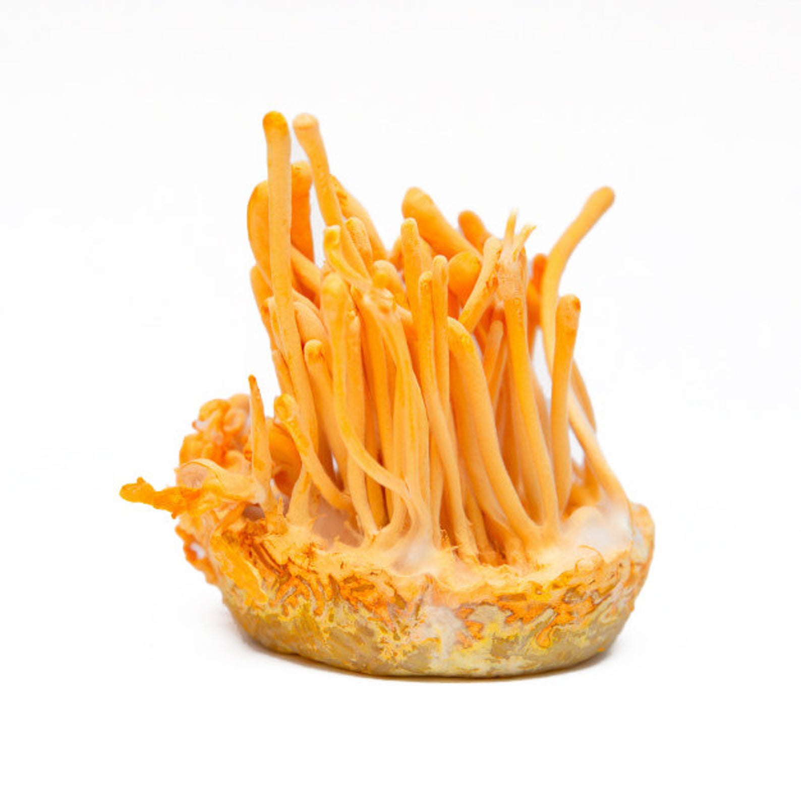

- 
-
Cortyceps Mushroom
$50.00
Cordyceps /ˈkɔːrdɪsɛps/ is a genus of ascomycete fungi (sac fungi) that includes about 400 species. Most Cordyceps species are endoparasitoids, parasitic mainly on insects and other arthropods (they are thus entomopathogenic fungi); a few are parasitic on other fungi.[2] The generic name Cordyceps is derived from the Greek word κορδύλη kordýlē, meaning "club", and the Latin word caput, meaning "head".
Add to cart